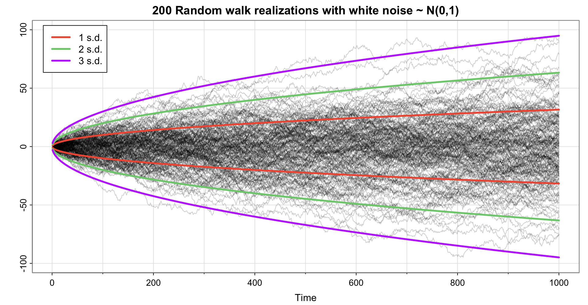

时间序列分析与预测
第三讲：时间序列的特征
章后练习 2.2
考虑时间序列模型x_t = \beta_0 + \beta_1 t + w_t,其中 \beta_0 和 \beta_1 是回归系数，w_t \sim wn(0, \sigma_w^2) 是白噪声。
\{x_t\} 是平稳过程吗？
证明 y_t = x_t - x_{t-1} 是平稳过程。
证明 z_t = \tfrac{1}{3}(x_{t-1} + x_t + x_{t+1}) 的均值函数是 \beta_0 + \beta_1 t。
平稳序列需满足的条件 1 为“该序列的均值函数 \mu_t 是常数，且不依赖于时间 t”。
\{x_t\} 的 均值函数
\mu_{xt} = E(x_t) = E(\beta_0 + \beta_1 t + w_t) = \beta_0 + \beta_1 t
是时间 t 的函数，因此 \{x_t\} 不是平稳过程。
\begin{align*} y_t &= (\beta_0 + \beta_1 t + w_t) - (\beta_0 + \beta_1 (t-1) + w_{t-1})\\ &= \beta_1 + w_t - w_{t-1} \end{align*}
\Rightarrow
\begin{align*} &\mu_{yt} = \beta_1 \\ &\gamma_y(s,t) = \begin{cases} 2\sigma_w^2 & \text{if } s = t \\ -\sigma_w^2 & \text{if } |s-t| = 1 \\ 0 & \text{if } |s-t| > 1 \end{cases} \end{align*} 因此，\{y_t\} 是平稳过程。
\begin{align*} z_t &= \tfrac{1}{3}\big[3 \beta_0 + \beta_1 (t-1 + t + t+1)+ w_{t-1} + w_t + w_{t+1}\big]\\ &= \beta_0 + \beta_1 t + \tfrac{1}{3}(w_{t-1} + w_t + w_{t+1}) \end{align*}
\Rightarrow
\begin{align*} \quad \mu_{zt} &= \beta_0 + \beta_1 t + E\big[ \tfrac{1}{3}(w_{t-1} + w_t + w_{t+1}) \big] \\ &= \beta_0 + \beta_1 t \end{align*}